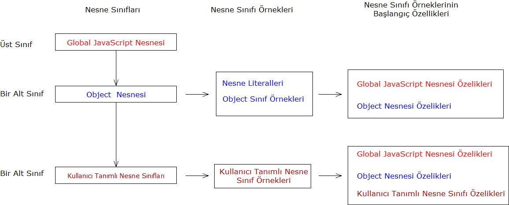

JavaScript Temelleri
Bölüm 15
Kullanıcı Tanımlı Nesneler
Bölüm 15 Sayfa 1
15.1 - Kullanıcı Tanımlı Nesnelerin Tanıtımı
JavaScript yorumlayıcısı, tam olarak nesne yönelimli olarak yazılmış bir yorumlayıcıdır. JavaScript programlama dili, tüm program öğelerini nesne olarak algılar ve nesne yönetimine göre çözümler. JavaScript uygulamalarında ise, kullanıcılar isterlersse tamamen prosedüral, isterlerse hem prosedüral hem de nesne yönelimli olarak programlama yapabilirler. Hiç nesne yönelimli öğeler kullanılmasa da, JavaScript programcılarının, nesne yönelimli yöntemleri çok iyi özümsemiş olmaları gerekir. Bunun nedeni, JavaScript programlama dilinin öz yapısının nesne yönelimli olması, çok sayıda öntanımlı nesneleri içermesi ve JavaScript programlama dilinde programların yapılabilmesi için, bu öntanımlı nesnelerin yönetimin iyi bilinmesi gerekmektedir. Bu çalışma sürecinde, nesne yönelimli programlama yöntemi, progresiv bir yaklaşımla açıklanmaya çalışılmış ve konular ilerledikçe öğrencilerin NYP (Nesne Yönelimli Programlama) konusunda giderek daha bilgili olmaları için çaba gösterilmiştir.
Nesne Yönelimli Programlama (NYP) konusu ilk olarak bölüm 1.6.4 de tanıtılmaya başlanmış ve nu bölümde, Kalıtım (Inheritance), İlişkili Verilerin Paketlenmesi (Encapsulation), Soyutlama (Abstraction), Çok Biçimlilik (Polymorphism), ve genel NYP (OOP) konularında bilgiler verilmiştir.
JavaScript programlama dilinde, NYP yöntemlerinin uygulanması konusu, bölüm 2.6 da, incelenmiş ve burada kuramsal konuların, JavaScript programlarında uygulanmaları örneklerle açıklanmıştır. Bu bölümde, nesnelerin tanımı, this saklı sözcüğü, nesnelerin özellikleri ve metotlarına erişim, nesne literalleri, içiçe yuvalanmış nesneler incelenmiştir.
NYP yöntemlerinin incelenmesine, bölüm 3.1 de devam edilmiş burada JavaScript Nesne Teknolojisi ve Hiyerarşisi, Yapılandırıcı ( Constructor) Fonksiyonlar, Yapılandırıcı (Constructor) Fonksiyonların Prototip (prototype) Özellikleri, Kullanıcı Tanımlı Yapılandırıcı (Constructor) Fonksiyonlar, JavaScript Nesne Hiyerarşisi incelenmiştir.
Bu bilgiler, öğrencilere NYP yöntemleri üzerine temel bir bilgi kazandırmış ve bundan sonra incelenen tüm JavaScript öntanımlı nesneleri (Çekirdek Nesneleri) nin incelenmesi, NYP bilinci ile kolaylıkla izlenebilmiştir.
Buraya kadar yapılan NYP incelemeleri, öntanımlı nesnelerin yönetiminin incelenmesi için yeterli sayılabilmesine karşın, kullanıcıların kendi nesne sınıflarını oluşturup yönetmeleri için biraz daha uygulama deneyimine gereksinme duyabilecekleri düşünülmüş ve bu bölümde, kullanıcı tanımlı nesnelerin biraz daha yakından incelenmesi konusu üzerinde durulmuştur.
15.1.1 - Prosedüral ve NYP Yöntemleri Arasında Seçim Yapılması
JavaScript programlama dili, gerek prosedüral gerekse NYP yöntemlerini performans sorunu olmadan aynı ölçüde destekleyen bir hibrid programlama ortamıdır. Bu açıdan son derece modern bir yapısı vardır ve modernite ve hibrid programlama açışından C++ ve ADA ile aynı kulvardadır. JavaScript programlama dilinde, prosedüral ve NYP yöntemleri eşit olarak desteklenebildiğinden, kullanıcıların programlarda seçmeleri gereken yöntemi iyi saptamaları önem taşımaktadır.
Öncelikle belirtilmesi gereken bir nokta, modern programcılık açısından tek seçimin NYP olmadığı hatta bunun tersinin doğru olabileceğidir. Modern programlama dilleri hibrid programlama ortamlarıdır. Programcılar gereksinme duydukları yöntemleri serbestçe ve ve modası geçmişlik kaygılarından uzak olarak serbestçe seçebilirler. Modernite daha çok yapısal programlama, engellemeyen script pprogramları gibi konular ile ilgilidir. Kullanıcılar, uygulamaları gereken yöntemleri, programlanacak problemin gereklerine göre seçmelidirler. Burada bu konuyu daha yakın olarak inceleyeceğiz.
Prosedüral yöntemlerde, değişkenler, kullanıcıların yazdığı genel ve özel amaçlı fonksiyonlar, nesne literalleri, JavaScript Çekirdek Nesneleri kullanılır. Kullanıcılar, gereksinme duydukları kullanılabilir öntanımlı nesneleri, genel ve özel amaçlı fonksiyonları kullanarak programlama yaparlar. Prosedüral programlama yöntemi kullanılan programlar, bir alanın jeodezik verilerinin değerlendirilmesi gibi, son derece karmaşık yöntemler olabilir. Yine çok karmaşık olabilien sayısal çözüm yöntemleri de tamamen prosedüral yöntemlerle çözümlenirler. Yani basit çalışmalar için prosedüral, karmaşık yöntemler için NYP yöntemlerinin kullanılacağı gibi bir kural yoktur. Sadece problemde tekrarlı öğelerin bulunup bulunmadığı önem taşır. Daha çok tekrarsız öğeler ile çalışılacaksa, prosedüral yöntemler, uygulanması gereken tek seçenek olabilir.
NYP yöntemleri tekrarlı öğeler olduğu zaman düşünülmelidir. Örnek olarak bir klübün üyelerinin kayıt numaraları isim ve soyadları, adresleri, aidat miktarları kaydediliyorsa, bir yöntemle programa üye veri yapısı belirtilir ve her yeni üye için bu verilerin girilmesinin gerekekebileceği önceden belli olur. Bu şekilde her yeni üye için sadece veriler girilir. Belirli veri yapısındaki örneklerin dış veri temellerine kaydedilmesi ve kayıtları verilere erişim de kolaylıkla gerçekleşir.Bu tür tekrarlı verilerin işlenmesi için NYP yönteminin seçilmesinin gerektiği açıktır.
NYP yöntemlerinin uygulandığı sistemlerde, hiyerarşik nesne yapılanmasının uygulanıp uygulanmayacağı da ayrı bir düşünülecek konudur. Bir veri yapısında örnek olarak yüze yakın özellik bulunuyorsa ve tüm örneklerin bu özelliklerin tümüne gerek duymayacakları görülürse, en az özellik gerektirenleri en üste diğerlerini de sırası ile alt sınıflarda organize edildiği bir hiyerarşik sınıflandırma yaratılabilir. Her sınıf bir kısım özellikleri üst sınıflardan kalıtım yolu ile elde eder ve buna kendi özelliklerini ekler, en alt sınıf kalıtım yolu ile elde ettiği özelliklere kendi özelliklerini de ekleyerek, özelliklerin tümüne sahip olur. Hiyerarşik yapılanma, her nesne sınıf örneğinin az sayıda görünür özellik ile çalışılabilme kolaylığını sağlamasına karşın, görünmeyen başka özelliklerle de uğraşılması zorluğunu içerir. Hiyerarşik bir yapılanma baştan iyi tasarlanmalı ve çalışma sürecinde veri yapılarında yapılacak değişiklikler ancak iyi bir strateji ile gerçekleştirilmelidir.
15.1.2 - Veri Yapıları
JavaScript programlama dilinde, sınıf kavramı yoktur. JavaScript nesneleri, aynı prototipi paylaşan bilgi topluluklarıdır. Çeşitli terminolojilerde, nesneler için veri alanları, nesne özellikleri için veri alanları terimleri kullanılmaktadır. Her farklı bir prototip, farklı bir veri tipi veya veri yapısı veya nesne sınıfı olarak adlandırılabilecek yapılanmayı tanımlar. ECMA-262 , bu yapılanmalar için, prototip nesnesinin yapısı, nesne ve nesne özelliği terimlerini kullanır. Kararlı olmak kaydı ile bu terimlerin eş anlamlılarının kullanılmasının sakıncası yoktur. Özgün ve benzersiz (unique) prototip nesneleri sınıf nesneleri, bu prototiplerin tanımladığı veri yapıları nesne sınıfları olarak düşünülebilir. Doğal olarak bu isimler, başka programlama dillerinin aynı isimlerdeki tanımları gibi niteliklere değil, JavaScript programlama dilinde, tanımlı oldukları niteliklere sahip olacaklardır.
Bir nesne sınıfının veri yapısı, o nesne sınıfının tüm özellikleridir (metotlar dahil). JavaScript programlama dili prototip temeline dayalı olduğundan, sınıf veri yapısı, sınıfın prototip nesnesinin özellikleridir. Sınıfın prototip nesnesi, sınıfın yapılandırıcı fonksiyonunun prototype özelliğinin değeridir. Her sınıfın prototip nesnesinin yapısı, o sınıfın örneklerinin yapısının aynıdır veya aynı anlamda, her sınıf örneğinin yapısı, o sınıfın prototip nesnesinin yapısıdır.
Bir sınıfın veri yapısı, o sınıfın prototip nesnesinin geçerli yapısıdır. Bir nesne sınıfı belirli bir yapılandırıcı fonksiyon ile yaratılmışsa ve sınıfın prototipi bir miktar örnek yaratıldıktan sonra değiştirilmişse, yaratılacak yeni örneklerin yapısı, sınıf prototipinin yeni yapısına uygun olacaktır. Bu durumda, yapılandırıcı fonksiyon o sınıfın yeni örneklerinin yaratılması için yetersiz kalacak, yaratılmış olan eski örneklerin yapısı da, yaratılacak olan yeni örneklerlerle uyumsuz olacaktır. Durumun düzeltilmesi için, iyi planlanmış uyum çalışmaları organize edilmelidir.
15.1.3 - JavaScript Nesne Hiyerarşisi
JavaScript nesne hiyerarşisi üzerine, bölüm b2.2.6 da verilmiştir. Buradaki şekil 2.2.6-1 de JavaScript nesne hiyerarşisi açık bir şekilde ortaya konulmuştur. Bu bilgiler, JavaScript süper sınıfının Global JavaScript Nesnesi olduğu, onun bir alt sınıfının generik nesne sınıf adı da verilen Object nesne sınıfı olduğunu, diğer tüm öntanımlı ve kullanıcı tanımlı sınıfların generik nesne sınıfının bir alt sınıf olduğunu ortaya koymuştur. Bu durumda, JavaScript hiyerarşik nesne sınıflarının, kalıtım yolu ile sahip olacağı özellikler aşağıda belirtilmiştir.

Şekil 15.1.3 - 1 JavaScript Nesne Hiyerarşisi ve Kalıtımla Aktarılan Özellikler
Şekil 15.1.3 - 1 de görüldüğü gibi, boş bir nesne literali ile hiç özelliği olmadan, aşağıda görüldüğü gibi,
function Vida() {}
hiç bir özellik veya metot içermeyecek şekilde boş olarak tanımlanmış bir Vida sınıfının örnekleri arasında sahip olacakları özellikler açısından hiçbir fark yoktur. Fakat, benzerlikler sadece bu iki ayrı sınıf örneğinin başlangıçta sahip olacakları özellik sayısı ile sınırlıdır. Bir boş nesne literali veya eş anlamda boş bir generik nesne sınıf örneği
makbuz = {};
şeklinde yaratılırken, bir Vida sınıf örneği,
ağaçVidası25 = new Vida();
şeklinde yaratılır. Eğer başlangıçta kendine özgü bir özelliği olmayacaksa, kullanıcı tanımlı sınıflar yaratmanın yararı ne olabilir. Burada elde edilen yarar, artık Vida sınıfının bir prototipi olmasıdır. Bu prototip kullanıcı tanımlı bir nesne prototipidir ve bir kez yaratıldıktan sonra, kullanıcılar tarafından kolaylıkla ve sorunsuz olarak yeni özellik ve metotlar eklenebilir. Bu yöntemler bölüm 3.4 de açıklanmıştır. Örnek olarak Vida sınıfı prototipine yeni bir özellik eklenmesi,
Vida . prototype.ölçü = 0;
şeklinde gerçekleştirilir. Bu şekilde vida sınıfına yeni bir özellik eklenmiş ve başlandıç değeri verilmiş olur. Nesne sınıflarına yeni özellikler ancak yeni özelliğin, o nesnesin prototipine tanıtılması ile gerçekleşebilir.
Kullanıcı tanımlı nesne sınıflarının prototiplerine çalışma süresinde kkatkı yapılmasının tek yaratabileceği sorun daha önce yaratılmış olan sınıf örneklerinin bu özellikten yoksun olacağı ve bunun da önce yaratılan ile sonra yaratılacak nesne örneklerinin yapılarında bir uyumsuzluğa neden olacağıdır. Bu sorun da bilinçli uyum programları tasarlanarak kolayca aşılabilir.
Diğer taraftan, boş nesne literallerinin kendilerine yeni özellikler sorunsuzca eklenebilirken, bu özellikleri ait oldukları öntanımlı generik nesne sınıf örneklerine eklemek, tüm sistemdde, kolayava aşılamayacak uyum ve taşınabilirlik sorunları yaratabilir. Bu nedenle öntanımlı sınıfların prototiplerinin değiştirilmesi sağlık verilmez.
Bu bilgilerden kullanıcı tanımlı nesne sınıflarının önemi ortaya çıkmaktadır. Kullanıcı tanımlı nesne sınıfları, JavaScript programlarında nesne teknlojisinin sorunsuzca uygulanması için çok gereklidir. Nesne literallerinin yapısı sadece bir tek nesne örneğine özgü iken, kullanıcı tanımlı bir nesne sınıfının bir kez yapısı sınıf prototipine aktarıldıktan sonra, bu sınıftan kolaylıkla sonsuz sayıda aynı yapıda nesne sınıf örneği yaratılabilir.
Kullanıcı tanımlı nesne sınıflarının prototiplerine özelliklerin tanıtılması, sadece özellik ekleme yolu ile gerçekleşmez. Kullanıcı tanımlı nesne sınıflarının örneklerinin yaratılmasında otomatikliğin sağlanması için, kullanıcı tanımlı nesne sınıfları için, yapılandırıcı fonksiyonlar içinde bu özellikler ve başlangıç değerleri belirtilebilir. Daha doğrusu, kullanıcı tanımlı nesne sınıflarının nesne örneklerinin yaratılmasında kolaylık sağlanması için, bilinçli yapılandırıcı fonksiyonlar tasarlanmalaıdır. Kullanıcı tanımlı nesne sınıflarının yapılandırıcı fonksiyonlarının tasarımını biraz sonra inceleyeceğiz.
15.1.4 - instanceof İşlemcisi
instanceof İşlemcisi, bir nesnenin tanımlı bir nesne sınıfından olup olmadığını kontrol eder. Kullanımı
if (nesneörneği instanceof nesnesınıfı) {...
şeklindedir. Sınıf üyeliğini kontrol eden bir JavaScript programının, bağlantılı olduğu uygulama sayfasında, verdiği sonuç, aşağıda görülmektedir:
... var malzeme = {} ; if (malzeme === instanceof Object) { bilgiYaz('malzeme nesne literali Object nesne sınıf örneğidir !', 'b15.1.4-uyg-1-sonuç-1'); else { bilgiYaz('malzeme nesne literali Object nesne sınıf örneği değildir !', 'b15.1.4-uyg-1-sonuç-1'); ...
Sonuç :
Bu uygulamanın sonucundan da görüldüğü gibi, instanceof işlemcisi, nesne sınıf örneklerinin ait oldukları sınıfların saptanması için iyi bir yöntemdir. Bu işlemcinin, kullanıcı tanımlı nesne sınıflarında uygulama alanlarını kısa süre sonra inceleyeceğiz.
15.1.5 - Kullanıcı Tanımlı Nesnelerin Özelliklerinin Sorgulanması
Kullanıcı tanımlı nesnelerin iki türlü özellikleri olduğu biraz önce görülmüştü. Bunlardan ilki, şekil 2.2.6-1 de görülen JavaScript nesne hiyerarşisi sonucunda, kullanıcı tanımla nesnelerin sahip oldukları öntanımlı özelliklerdir. Bu özellikler sayılamaz (non-enumerable) karakterdedir. Sayılamaz karakterde olan özellikler for..in döngüleri ile sayılamazlar. Bu döngülerle sadece sayılabilir özellikler sayılabilir.
Sayılabilir özellikler iki türlüdür. Bunlarda ilki, kullanıcı eliyle yaratılmış olan bir hiyerarşik yapılanmada kullanıcı tanımlı üst sınıflardan kalıtımla aktarılan özellikler, diğeri de nesne sınıfında tanımlanmış olan özelliklerdir.
JavaScript programlama dilinde, sadece prototip zincirinin kurulması ile yaratılan hiyerarşik sistemlerde üst sınıflardan kalıtımla aktarılan sayılabilir nitelikte özellikler, nesne sınıfında tanımlanmış olanlarla birlikte for..in döngüleri ile sayılabilirler. Diğer yöntem olan, yapılandırıcı fonksiyonların birbirlerini çağırması yöntemi ile oluşturulan hiyerarşik sistemlerde, üst sınıflardan kalıtımla gelen sayılabilir nitelikte özellikler, for..in döngüleri ile sayılamazlar. Bu konularda, çok dikkatli olunması gerekir.
Daha önce bölüm 2.13.5 de for..in döngüleri incelenmişti. Basit bir nesne literali oluşturalım ve özelliklerini , for..in döngüleri ile görüntülemeye çalışalım. Bu konuda örnek bir JavaScript programı ve bağlantılı olduğu uygulama sayfasında verdiği sonuç, aşağıda görülmektedir:
... function özellikBelirleTüm(nesneÖrneği , yazımYeri) { for (var özellik in nesneÖrneği) { döngüYaz(özellik + ' = ' + nesneÖrneği[özellik] , yazımYeri); } } // özellikBelirleTüm() Fonksiyonu bdelib.js Fonksiyon Kitaplığına Alınmıştır. var arızaBildirimi = { nr : 25, tip : 'normal', bayi : 'Beşiktaş', ücret : function() { return parseInt(this.servisSüresi * 30); } }; özellikBelirleTüm(arızaBildirimi, 'b15.1.5-uyg-1-sonuç-1'); ...
Program Sonucu :
Burada görülen sonuç, veriyapısının tüm alanlarını içerir. Bu fonksiyonda kullanılan for..in döngülerinde ne yazık ki bir programlama hatası vardır ve incelenen nesne bir süper sınıfın alt nesnesi ise, kendi alanları yanında üst sınıfın yapılandırıcı fonksiyonunun da yazılımını da verir.Veri yapıları, bir biraz sonra inceleyeceğimiz gibi, prototip transferi ile bir üst sınıf/alt sınıf hiyerarşisi ile yaratıldığında, bir alt sınıfın tüm alanlarına üst sınıf alanları da girebilir. Bu nedenle, veri yapıları sorgulandığında, net sorular oluşturmak gerekir. Veri yapısı yukarıdaki gibi filtrelenmemiş olarak değil belirli filtreler gözönüne alınarak sorgulanır. İlk olarak, veri yapısının salt kendi sınıfına ait özelliklerin istendiği ve varsa üst sınıf özelliklerinin filtre edildiği bir sorgulama programını oluşturalım. Bunun için, bölüm 4.2.4 de incelenmiş olan hasOwnProperty() metodundan yararlanılabilir. Bu konuda örnek bir JavaScript programı ve bağlantılı olduğu uygulama sayfasında verdiği sonuç, aşağıda görülmektedir:
... function özellikBelirleTümÖzgün(nesneÖrneği , yazımYeri) { for (var özellik in nesneÖrneği) { if (nesneÖrneği.hasOwnProperty(özellik) { döngüYaz(özellik + ' = ' + nesneÖrneği[özellik] , yazımYeri); } } } // özellikBelirleTümTümÖzgünDeğerler() Fonksiyonu bdelib.js Fonksiyon Kitaplığına Alınmıştır. var arızaBildirimi = { nr : 25, tip : 'normal', bayi : 'Beşiktaş', ücret : function() { return parseInt(this.servisSüresi * 30); } }; özellikBelirleTümÖzgün(arızaBildirimi, 'b15.1.5-uyg-2-sonuç-1'); ...
Program Sonucu :
Sonucun aynı çıkması doğaldır, çünkü örnek olarak incelenen veri yapısı hiyerarşik bir yapılanma ile yaratılmamıştır.
Bazı durumlarda, bir nesne sınıfının salt veri yapısının kontrolü yeterli olabilecektir. Bir sınıfın tüm veri yapısının yazdırıldığı bir JavaScript programı ve bağlantılı olduğu uygulama sayfasında vermiş olduğu sonuç aşağıda görülmektedir.
... function tümVeriYapısı(nesneÖrneği , yazımYeri) { for (var özellik in nesneÖrneği) { if (typeof nesneÖrneği[özellik] == 'function') { özellik += '()'; } döngüYaz(özellik , yazımYeri); } } // tümVeriYapısı() Fonksiyonu bdelib.js Fonksiyon Kitaplığına Alınmıştır. var arızaBildirimi = { nr : 25, tip : 'normal', bayi : 'Beşiktaş', ücret : function() { return parseInt(this.servisSüresi * 30); } }; tümVeriYapısı(arızaBildirimi, 'b15.1.5-uyg-3-sonuç-1'); ...
Program Sonucu :
Yukarıdaki uygulamada veri yapısının, değer özellikleri ve metotları belirtecek şekilde yazılabildiği görülmektedir. Bazı durumlarda, sadece nesne sınfına özgün olan veri yapısının saptanması isteneblir. Bu durumda, tümVeriYapısı() fonksiyonuna ek bir filtre eklenmesi yeterli olacaktır. Bunu gerçekleştirenbir JavaScript programı ve bağlantılı olduğu uygulama sayfasında vermiş olduğu sonuç aşağıda görülmektedir.
... function özgünVeriYapısı(nesneÖrneği , yazımYeri) { for (var özellik in nesneÖrneği) { if (nesneÖrneği.hasOwnProperty(özellik)) { if (typeof nesneÖrneği[özellik] == 'function') { özellik += '()'; } döngüYaz(özellik , yazımYeri); } } } // özgünVeriYapısı() Fonksiyonu bdelib.js Fonksiyon Kitaplığına Alınmıştır. var arızaBildirimi = { nr : 25, tip : 'normal', bayi : 'Beşiktaş', ücret : function() { return parseInt(this.servisSüresi * 30); } }; özgünVeriYapısı(arızaBildirimi, 'b15.1.5-uyg-4-sonuç-1'); ...
Program Sonucu :